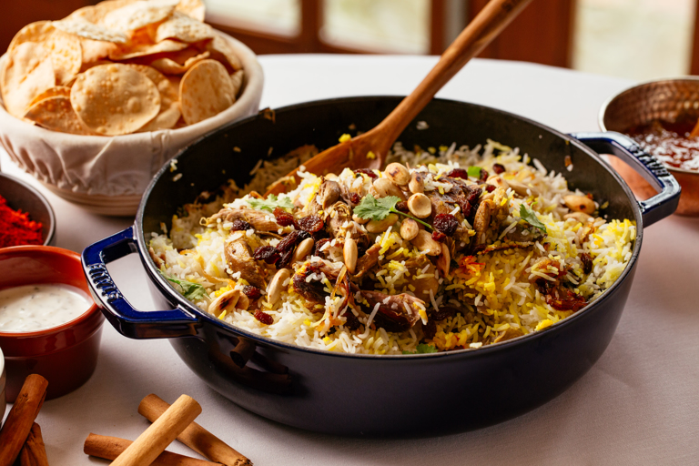

Lamb Biryani

Ingredients
- 400g lamb neck, cut into small cubes
- 4 garlic cloves, grated
- 1 tbsp finely grated ginger
- 1 tbsp sunflower oil
- 1 large onion, chopped
- 1 tbsp cumin seeds
- 1 tbsp nigella seeds
- 1 tbsp Madras spice paste
- 200g basmati rice, rinsed well
- 8 curry leaves
- 400ml lamb or chicken stock
- 100g paneer, chopped
- 200g spinach, cooked and water squeezed out
- chopped coriander
- sliced green chillies
- plain yogurt
Steps
- Toss the lamb in a bowl with the garlic, ginger and a large pinch of salt. Marinate in the fridge overnight or for at least a couple of hours.
- Heat the oil in a casserole. Fry the lamb for 5-10 mins until starting to brown. Add the onion, cumin seeds and nigella seeds, and cook for 5 mins until starting to soften. Stir in the curry paste, then cook for 1 min more. Scatter in the rice and curry leaves, then pour over the stock and bring to the boil. Meanwhile, heat oven to 180C/160C fan/gas 4
- Stir in the paneer, spinach and some seasoning. Cover the dish with a tight lid of foil, then put the lid on to ensure it’s well sealed. Cook in the oven for 20 mins, then leave to stand, covered, for 10 mins. Bring the dish to the table, remove the lid and foil, scatter with the coriander and chillies and serve with yogurt on the side.
return